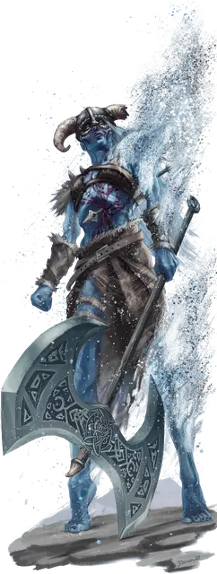

Морозная скорбь
Frostmourn
Огромная Нежить, обычно нейтрально-злая

Класс Доспеха 13 (природный доспех)
Хиты 195 (17к12 + 85)
Скорость 40 футов
| мод | спас | ||
|---|---|---|---|
| СИЛ | 23 | +6 | +6 |
| ЛОВ | 9 | −1 | −1 |
| ТЕЛ | 21 | +5 | +9 |
| мод | спас | ||
|---|---|---|---|
| ИНТ | 9 | −1 | −1 |
| МДР | 11 | +0 | +4 |
| ХАР | 18 | +4 | +4 |
Навыки Атлетика +10, Восприятие +4
Уязвимость к урону огонь
Иммунитет к урону холод, яд
Иммунитет к состояниям захват, испуг, истощение, окаменение, опутанность, отравление, очарование, паралич, сбивание с ног
Чувства пассивное Восприятие 14
Языки Великаний
Опасность 10 (5900 опыта)
Бонус мастерства +4
Действия
Мультиатака. Морозная скорбь совершает одну атаку Замораживающим прикосновением и одну атаку Ледяным топором. Он может заменить одну из этих атак атакой Полярным лучом.
Замораживающее прикосновение. . Рукопашная атака оружием: +10 к попаданию, досягаемость 5 футов, одно существо. Попадание: 18 (4к8) урона холодом плюс 18 (4к8) урона некротической энергией. Если этот урон уменьшает хиты цели до 0, то вместо этого у неё остаётся 1 хит и она становится окаменевшей, превращаясь в замороженную статую.
Если статуя получает дробящий урон, она разбивается вдребезги, убивая замороженное существо. Если статуя получает урон огнём, то вместо этого она не получает никакого урона и оттаивает, оканчивая окаменение.
Ледяной топор. . Рукопашная атака оружием: +10 к попаданию, досягаемость 10 футов, одно существо. Попадание: 19 (3к8 + 6) рубящего урона плюс 7 (2к6) урона холодом.
Полярный луч. . Дальнобойная атака заклинанием: +8 к попаданию, дистанция 120 футов, одна цель. Попадание: 31 (5к10 + 4) урона холодом и скорость цели уменьшается на 10 футов до конца её следующего хода.
Реакции
Спасение снежной бури. Сразу после того, как существо, которое видит морозная скорбь, попадает по нему броском атаки, морозная скорбь на мгновение растворяется в снежной буре, уменьшая наносимый ему урон наполовину. После чего морозная скорбь может волшебным образом телепортироваться в незанятое пространство, которое она может видеть в пределах 30 футов от себя.
Описание
Когда ледяного великана убивают бесчестным образом — возможно, отравляют, наносят удар кинжалом в спину или убивают во время сна, — убитый великан может воскреснуть в виде морозной скорби. Движимый жаждой мести, морозная скорбь может одним прикосновением превращать живых в застывшие статуи или обдавать врагов ледяным ветром. Свершения мести не всегда достаточно, чтобы даровать этим существам покой; часто их ненависти и отвращения к живым оказывается достаточно, чтобы заставлять их скитаться по диким местам в течение многих лет после того, как их убийцы будут убиты.
Морозная скорбь выглядит как высохший труп, мумифицировавшийся под воздействием сильного холода. Он несет на своем теле следы своей смерти: рану, из которой сочится морозный пар, или яркие пурпурные вены, свидетельствующие о разрушительном действии яда. Он может на мгновение растворить свое тело в вихрящейся снежной буре, чтобы избежать урона, и вновь сформироваться на расстоянии, чтобы продолжить атаку.